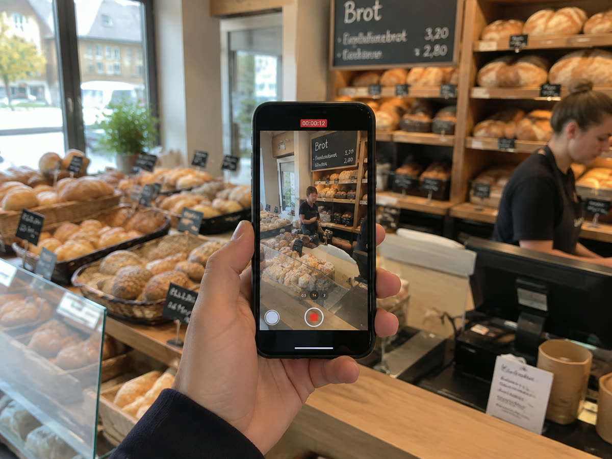

Instagram oder TikTok für lokale Betriebe?
Die Frage kommt in fast jedem ersten Gespräch. Die Antwort hängt weniger an der Plattform als an Ihrer Kundschaft.
Die Frage kommt in fast jedem ersten Gespräch, und sie wird meist zu früh gestellt. Welche Plattform die richtige ist, hängt weniger von der Plattform ab als davon, wer gefunden werden soll und wie viel Zeit vorhanden ist. Die kurze Antwort für die meisten lokalen Betriebe lautet: Instagram zuerst, TikTok dazu, wenn es läuft.
Die lange Antwort ist nützlicher, weil sie erklärt, warum das so ist und wann es nicht gilt.

Wer dort jeweils unterwegs ist
Instagram deckt in Deutschland die breiteste Altersspanne ab. Von Mitte zwanzig bis Mitte fünfzig ist praktisch jede Gruppe vertreten, und das ist genau der Bereich, in dem Handwerk, Praxen, Gastronomie und Einzelhandel ihre Kundschaft finden. Wer Badsanierungen verkauft, Termine vergibt oder Tische füllt, trifft dort auf Menschen, die solche Entscheidungen treffen.
TikTok ist jünger, auch wenn sich das seit Jahren verschiebt. Die Plattform ist stärker auf Entdeckung ausgelegt: Nutzer bekommen fast ausschließlich Inhalte von Konten zu sehen, denen sie nicht folgen. Für unbekannte Profile ist das ein Vorteil, weil der Start leichter fällt. Für einen Betrieb, der eine bestimmte Altersgruppe in einem bestimmten Umkreis erreichen will, ist es weniger zielgenau.
Dazu kommt ein praktischer Punkt. Viele Menschen suchen inzwischen direkt in Instagram nach Betrieben in ihrer Nähe und schauen sich das Profil an, bevor sie anrufen. Das Profil ersetzt zunehmend die Startseite als ersten Eindruck. Auf TikTok passiert das seltener.
Warum das meiste Material auf beiden funktioniert
Beide Plattformen zeigen senkrechte Kurzvideos, beide messen vor allem die Verweildauer, beide belohnen einen guten Anfang. Ein Video, das auf Instagram funktioniert, funktioniert in aller Regel auch auf TikTok. Der Aufwand verdoppelt sich also nicht, wenn man beides bespielt; er steigt um vielleicht ein Fünftel.
Dieses Fünftel hat es allerdings in sich. Wasserzeichen aus der jeweils anderen App werden schlechter ausgespielt, Texteinblendungen sitzen an unterschiedlichen Stellen, weil die Bedienelemente anders liegen, und die Tonauswahl unterscheidet sich. Wer einfach das fertige Video herunterlädt und hochlädt, verschenkt Reichweite. Richtig gemacht heißt: einmal schneiden, zweimal sauber exportieren.
Technisch ist beides identisch im Format, nämlich 9:16. Was beim Schnitt sonst noch zählt, steht unter Schnitt.

Eine Empfehlung, die sich begründen lässt
Beginnen Sie mit Instagram, wenn Ihre Kundschaft älter als fünfundzwanzig ist und Sie örtlich gebunden arbeiten. Das trifft auf die meisten Handwerksbetriebe, Praxen und Restaurants zu. Richten Sie das Profil ordentlich ein, veröffentlichen Sie regelmäßig, und sehen Sie sich nach zwei Monaten an, was passiert ist.
Nehmen Sie TikTok dazu, wenn Sie jüngere Leute erreichen wollen, etwa für die Suche nach Auszubildenden, oder wenn Ihr Material besonders schaulustig ist: Reinigung, Restaurierung, Hochdruck, alles mit sichtbarem Vorher und Nachher. Dort ist der Hebel groß. Was Social Media bei der Personalsuche leistet, steht unter Mitarbeiter über Social Media finden.
Facebook ist für viele Betriebe nicht tot, aber es ist kein Ort mehr für Reichweite. Es lohnt als Ablage für Öffnungszeiten und Kontaktdaten und für eine ältere Stammkundschaft, die dort nachsieht. Aufwand gehört dort nicht hinein, solange die anderen beiden nicht laufen.
Der Fehler, der mehr kostet als die Plattformwahl
Drei Plattformen gleichzeitig zu starten und alle drei nach sechs Wochen liegen zu lassen, ist schlechter als eine einzige, die durchgehalten wird. Die Plattform entscheidet weniger als die Regelmäßigkeit, und Regelmäßigkeit ist eine Frage der Kapazität, nicht des guten Willens.
Wer das realistisch einschätzen will, rechnet einmal durch, wie viele Stunden im Monat dafür übrig sind. Die Rechnung dazu steht unter Selbst machen oder abgeben?. Wenn Sie es abgeben möchten, buchen Sie ein Erstgespräch. Danach wissen Sie, was es kosten würde.


Lernen wir uns kennen.
15 Minuten am Telefon oder per Video. Danach wissen Sie, ob und wie Social Media für Ihren Betrieb funktioniert.